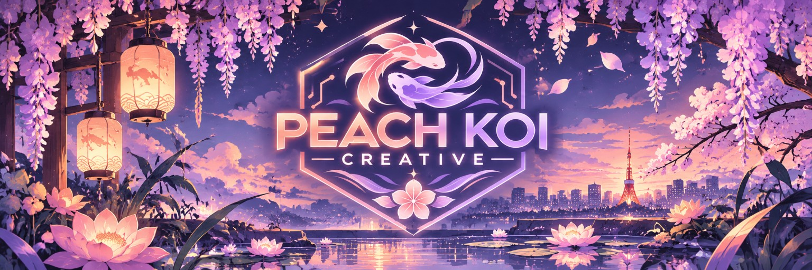
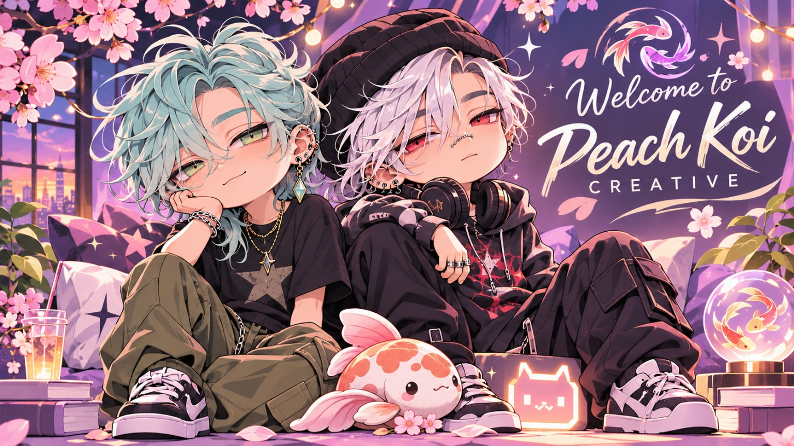

Personal by design
Nothing generic. We make with intention, curiosity and a clear point of view.
✦ An independent creative collective
A dreamy little world where art, identity and community meet. We create expressive work with heart, personality and just enough magic.


Our creative current
Peach Koi Creative lives between softness and attitude, nostalgia and modernity, imagination and craftsmanship.
We are a home for thoughtful projects and independent communities, each with its own voice, all connected by a belief that creativity should feel personal.
Explore our communities✦ What guides us
Nothing generic. We make with intention, curiosity and a clear point of view.
Play is serious creative work. Strange ideas and bright experiments belong here.
Communities thrive when people feel seen, welcome and free to be themselves.

✦ A constellation, not a corporation
From queer-first connection and playful AI art to identity beyond the binary and story-rich spaces for the wonderfully strange, our communities are distinct by design.
One Peach Koi. Three ways in.
Peach Koi Creative
Creative partners, useful tools and resources to help you turn ideas into things you can share.
Explore the StudioPeach Koi Creative
Independent member communities connected through creativity, identity and a shared commitment to care.
Meet the CollectivePeach Koi Creative
Find out what membership means, apply to join the collective or get in touch with its moderators.
Make a Connection✦ Swim alongside us
Bring your idea, your community or your curious little spark.
Meet the collective